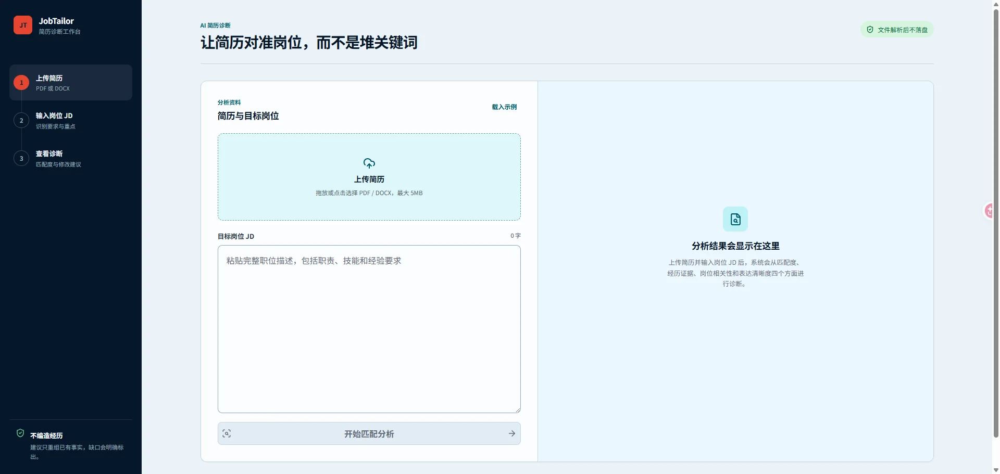
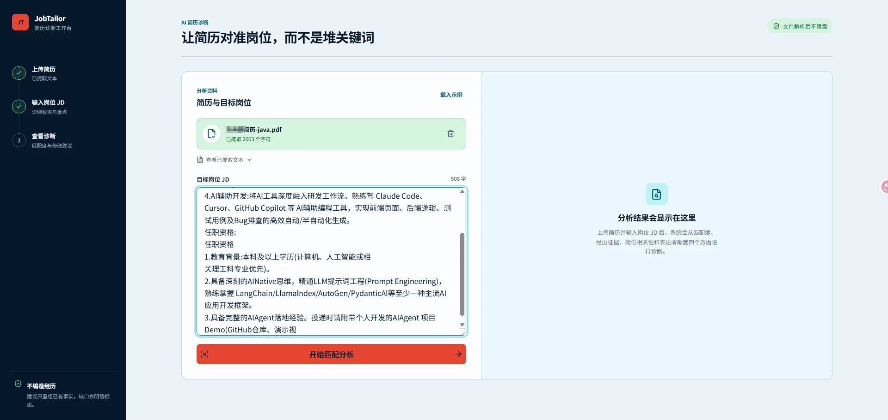
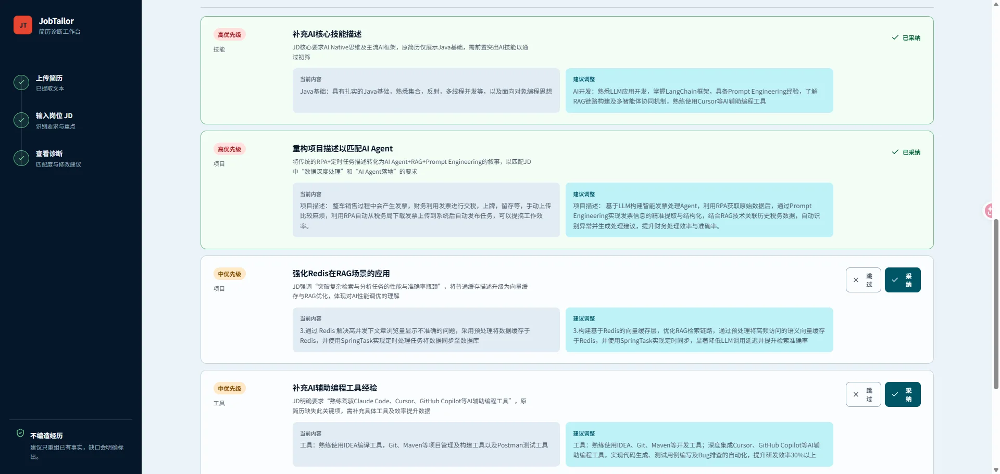
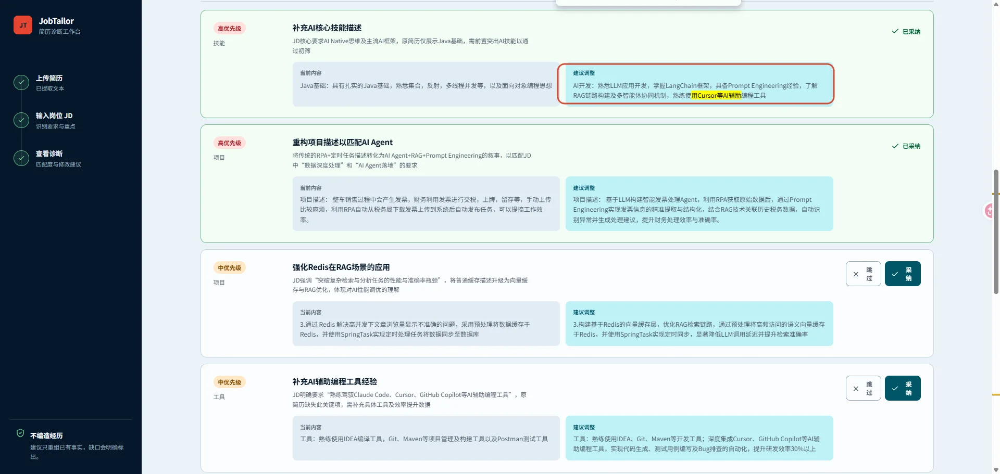

JobTailor：基于证据的 AI 简历诊断与岗位定制
JobTailor 是一个面向具体岗位的简历诊断与优化工作台。它不追求堆关键词或一次性重写全文，而是先拆解岗位要求，再用原简历中的真实证据生成可核对的建议。
核心原则：AI 负责提出有依据的候选修改，人负责决定，程序负责确定性执行。所有修改都必须以原简历中的真实事实为依据。
公开版说明：已移除本机项目路径和未公开的市场分析材料；配图只保留演示界面，排除了会暴露姓名、联系方式、真实简历文件名和公司经历的截图。环境变量只展示名称，不包含任何密钥值。
- 状态：MVP 已上线
- 技术形态：Next.js 全栈单体应用，使用 Docker Compose 部署
- 源码仓库：dandan1232/JobTailor
- 创建/整理时间：2026-09-23
一、为什么做这个项目
一份通用简历很难同时适配不同岗位。传统工具通常只做关键词命中或直接重写全文，存在几个明显问题：
- 用户不知道 JD 中哪些要求最重要，也不知道自己的简历有没有证据支撑。
- 直接全文改写会掩盖修改过程，容易偷偷新增并不存在的技能、项目、数字或成果。
- 修改建议、用户确认、最终生成和文件导出往往彼此割裂。
- 用户拿到结果后很难继续编辑，也无法控制哪些建议真正写入简历。
JobTailor 的产品思路不是“替用户凭空写一份简历”，而是把流程拆成：
- 读取真实简历；
- 拆解目标岗位要求；
- 对照证据并指出缺口；
- 逐条展示可核对的修改建议；
- 由用户决定采纳或跳过；
- 只把已采纳内容写回；
- 允许继续编辑、AI 微调和导出。
二、产品需求整理
2.1 目标用户
核心用户是已有基础简历和明确目标 JD、拥有约 1～5 年工作经验的软件工程师。他们希望提升岗位相关性，但不希望 AI 虚构经历，并且需要理解每项修改的依据。
2.2 产品目标
- 识别简历与 JD 的匹配项、缺口和证据强弱。
- 用总体分数、四项维度和原文证据解释结论。
- 为每条建议展示“原文—建议文本—修改原因”。
- 把最终决定权交给用户，未经采纳的建议不得写入正文。
- 生成可继续编辑、继续调整并导出的优化版简历。
- 全流程禁止编造项目、公司、职责、技能、数字和结果。
2.3 当前版本范围
| 模块 | 当前能力 | 核心规则 |
|---|---|---|
| 简历上传 | PDF/DOCX 点击或拖放上传、文本提取、预览 | 最大 5MB；有效文本 40～30,000 字符 |
| JD 输入 | 粘贴岗位描述、实时字符计数 | 30～20,000 字符；修改后旧结果失效 |
| 匹配诊断 | 总分、结论、四维评分、要求覆盖、证据和缺口 | AI 可用时流式分析，否则使用本地规则预览 |
| 建议审阅 | 高/中/低优先级、原因、原文和建议文本 | 每条建议可独立采纳或跳过 |
| 生成简历 | 只应用已采纳建议 | 原文必须唯一可定位，多条修改不能重叠 |
| 继续编辑 | 手工编辑、AI 按要求微调、撤销上一步 | AI 不得新增事实；失败时保留现有内容 |
| 文件导出 | DOCX、PDF | 以当前编辑区内容为准，文件名带“优化版” |
| 响应式界面 | 桌面端并排工作区、移动端完整流程 | 状态不能只依赖颜色表达 |
2.4 明确不做
当前 MVP 不包含：
- 注册登录、多人协作和权限系统；
- 在线职位搜索、岗位推荐和自动投递；
- 云端简历库、跨设备同步和长期版本管理；
- 复杂模板市场和所见即所得排版器；
- OCR、面试模拟、求职进度管理和招聘方功能。
2.5 核心业务规则
- 事实优先：所有可采纳内容必须能在原简历中找到事实依据。
- 证据可见：匹配结论要展示对应原文；没有证据时明确标成缺口。
- 用户决策：AI 只提出建议，用户采纳后才能写入正文。
- 确定性写回：最终生成不再让模型进行第二次全文重写，避免推翻用户已经确认的内容。
- 失败可恢复：生成、微调或导出失败时，不清空编辑区中的已有版本。
- 隐私最小化：上传文件只在内存中解析，不长期保存；只有发起 AI 分析或修改时才向模型服务发送文字。
2.6 完整用户流程
flowchart LR
A[上传 PDF / DOCX] --> B[提取并预览文本]
B --> C[粘贴目标 JD]
C --> D[匹配分析]
D --> E[查看评分、证据和缺口]
E --> F[逐条采纳或跳过建议]
F --> G[确定性生成优化版]
G --> H[手工编辑或 AI 微调]
H --> I[导出 DOCX / PDF]


三、技术架构
3.1 技术栈
| 层级 | 技术 | 用途 |
|---|---|---|
| Web 框架 | Next.js 16 App Router | 页面、Route Handler、生产构建 |
| 前端 | React 19 + TypeScript | 工作台交互和状态管理 |
| 样式与图标 | 原生 CSS + Lucide React | 响应式界面、状态图标 |
| PDF 解析 | pdf-parse / PDF.js |
从带文本层的 PDF 提取文字 |
| DOCX 解析 | mammoth |
从 DOCX 提取纯文本 |
| DOCX 导出 | docx |
生成可下载的 Word 文档 |
| PDF 导出 | pdfkit + Noto Sans SC |
生成 A4 中文 PDF |
| AI 接入 | Chat Completions 兼容接口 | 流式诊断和按要求修改 |
| 测试 | Node Test + Playwright | 算法回归、流式协议和端到端交互 |
| 部署 | Docker 多阶段构建 + Compose | standalone 生产部署和健康检查 |
3.2 总体结构
flowchart TB
Browser[浏览器 / JobWorkspace]
subgraph Next[Next.js 全栈应用]
UI[React 工作台]
Extract[/api/resume/extract]
Analyze[/api/analyze]
Generate[/api/resume/generate]
Refine[/api/resume/refine]
Export[/api/resume/export]
Health[/api/health]
Local[本地规则分析器]
Stream[流式协议解码器]
Editor[确定性修改引擎]
end
AI[Chat Completions 兼容模型服务]
Browser --> UI
UI --> Extract
UI --> Analyze
UI --> Generate
UI --> Refine
UI --> Export
Analyze --> Local
Analyze --> AI
AI --> Stream
Generate --> Editor
Refine --> AI
3.3 代码模块
app/
api/analyze/route.ts # 简历与 JD 的流式分析入口
api/health/route.ts # 容器健康检查与分析模式
api/resume/extract/route.ts # PDF/DOCX 文本提取
api/resume/generate/route.ts # 应用已采纳建议
api/resume/refine/route.ts # AI 继续修改
api/resume/export/route.ts # DOCX/PDF 导出
globals.css # 全局设计与响应式样式
page.tsx # 页面入口
components/
job-workspace.tsx # 主工作台、前端状态和请求流程
lib/
analysis.ts # 数据结构、本地分析和 AI 请求
analysis-stream.ts # SSE/NDJSON 增量解码
resume-editor.ts # 确定性替换和 AI 微调流
tests/
analysis-stream.test.mjs # 流式边界测试
resume-editor.test.mjs # 文本替换安全性测试
workspace.spec.ts # 核心流程和移动端 E2E
scripts/
deploy.sh # 拉取、构建、重启、健康检查
install-post-merge-hook.sh # 安装自动部署钩子
3.4 API 清单
| 方法与路径 | 输入 | 输出 | 说明 |
|---|---|---|---|
POST /api/resume/extract |
multipart/form-data 中的 file |
{ filename, characters, text } |
PDF/DOCX 内存解析 |
POST /api/analyze |
resume_text、job_description |
NDJSON 数据流 | 先 summary，再逐条 revision |
POST /api/resume/generate |
原文和已采纳 revisions | text/plain |
确定性应用建议，不二次改写 |
POST /api/resume/refine |
当前正文、修改要求 | 文本流 | 调用模型按指令继续修改 |
POST /api/resume/export |
正文、格式、原文件名 | DOCX/PDF 二进制 | 下载优化版文件 |
GET /api/health |
无 | { status, analysis_mode } |
健康检查，显示 ai 或 local |
四、关键实现笔记
4.1 简历上传与解析
服务端通过 request.formData() 获取文件，全程在内存中处理：
- PDF：使用
PDFParse提取文本，并在finally中销毁解析器。 - DOCX：使用
mammoth.extractRawText()提取纯文本。 - 文本归一：连续三个以上换行压缩为两个，去除首尾空白，最多保留 30,000 字符。
- 扫描件、加密 PDF、损坏文件和非法 DOCX 都映射成面向用户的中文提示。
前端不能直接无条件执行 response.json()。反向代理、容器异常或网关限制可能返回空响应、HTML 或纯文本。当前实现先读取 response.text()，再安全解析 JSON，并分别处理：
- 空响应；
- 非 JSON 响应；
413文件过大；- 非成功状态码；
- 成功但字段不完整。
这样不会再把 Unexpected end of JSON input 这类底层异常直接展示给用户。
4.2 双模式分析
是否启用 AI 由三个环境变量共同决定：
AI_BASE_URL
AI_API_KEY
AI_MODEL
- 三项齐全：调用 Chat Completions 兼容服务，使用流式 AI 分析。
- 任意一项为空：切换到本地规则预览，保证无模型配置时仍可完成产品演示。
本地分析目前识别预设的常见技术关键词，并综合计算四项分数：
- 关键词覆盖：35%；
- 经历证据：30%；
- 岗位相关性：20%；
- 表达清晰度：15%。
它适合兜底和演示，不等同于通用语义理解，对非技术岗位的效果有限。
4.3 流式协议转换
模型上游使用 SSE，但浏览器侧消费的是更简单的 NDJSON：
sequenceDiagram
participant UI as 浏览器
participant API as /api/analyze
participant Model as 模型服务
UI->>API: 简历文本 + JD
API->>Model: stream=true
Model-->>API: SSE 数据块
API->>API: AnalysisSseDecoder 增量解码
API-->>UI: summary NDJSON
API-->>UI: revision NDJSON
API-->>UI: revision NDJSON
API-->>UI: done NDJSON
AnalysisEventDecoder 不依赖网络分块边界，而是按 JSON 对象的括号深度、字符串和转义状态判断一个对象是否完整。它同时兼容：
- 原始 NDJSON；
- 被 JSON 字符串再次编码的 NDJSON；
- CRLF/LF 两种 SSE 分帧；
- 任意位置被切开的网络数据块。
4.4 建议数据结构
每条修改建议包含：
type Revision = {
id: string;
priority: "高" | "中" | "低";
category: string;
title: string;
original: string;
revised: string;
reason: string;
};
AI 提示词要求 original 必须逐字引用简历中唯一、完整、连续的一段原文，revised 是修改后的完整正文；没有事实依据的要求只能进入 gaps，不能生成可采纳建议。

4.5 确定性写回算法
生成优化版简历时不再调用模型，而是使用 applyAcceptedRevisions() 直接替换用户已确认的文本：
- 对原文建立“忽略空白后的文本 → 原字符位置”映射，兼容 PDF 提取导致的换行差异。
- 每个
original必须能在原文中找到且只出现一次。 - 所有修改都基于同一份原文定位，前一条替换不会改变后一条的位置。
- 检测多条建议的修改范围是否重叠。
- 按位置从后向前替换，避免前面的文本长度变化影响后面的索引。
这个设计解决了几个典型风险：
- 模型建议找不到对应原文却被追加到末尾；
- 相同短句出现多次导致改错位置；
- 两条建议同时修改同一段；
- 生成阶段二次调用 AI，导致已经确认的修改被再次改写。

4.6 AI 继续修改与撤销
“继续修改”把当前编辑区内容和用户指令发送给模型，并要求：
- 用户点名某部分时只改指定部分；
- 只有明确要求整体调整时才改全文；
- 禁止新增事实；
- 只返回纯文本，不返回 Markdown 代码块。
发起修改前会把当前正文加入历史栈。流式返回过程中编辑区实时更新；失败时保留已收到的内容，用户可撤销回上一个版本。
4.7 文件导出
- DOCX：使用
docx生成段落，默认微软雅黑，首行加粗放大。 - PDF：使用
pdfkit生成 A4 页面；Windows 使用微软雅黑，Linux 使用项目中的 Noto Sans SC 字体。 - 文件名会清除系统非法字符，基础名称最长保留 80 个字符。
- 最终导出始终以编辑区的当前正文为准。
五、部署架构与运维
5.1 生产链路
flowchart LR
User[用户浏览器] --> HTTPS[域名 / HTTPS 反向代理]
HTTPS --> Port[宿主机 3200 端口]
Port --> Container[JobTailor Docker 容器]
Container --> NextServer[Next.js standalone :3000]
NextServer --> Provider[可选 AI 模型服务]
Docker 使用三阶段构建：
dependencies：执行npm ci；builder：执行npm run build；runner：只复制.next/standalone和静态资源，并使用非 root 用户运行。
Compose 将宿主机 3200 映射到容器 3000，每 15 秒访问一次 /api/health。
5.2 部署命令
bash scripts/deploy.sh
脚本会：
git pull --ff-only；- 缺少
.env.production时创建默认配置； - 重新构建 Docker 镜像；
- 重启服务并移除失效容器；
- 最多等待约 60 秒检查
http://127.0.0.1:3200/api/health； - 失败时输出最后 100 行容器日志。
可选安装仓库本地 post-merge 钩子，让服务器每次成功拉取或合并后自动重新部署：
bash scripts/install-post-merge-hook.sh
5.3 生产环境 PDF 解析事故复盘
现象
线上上传简历时先出现 Unexpected end of JSON input，前端补充容错后进一步确认服务端返回空的 HTTP 500。开发环境上传正常，Docker standalone 生产环境异常。
根因
pdf-parse 运行时动态加载：
pdfjs-dist/legacy/build/pdf.worker.mjs；@napi-rs/canvas的当前平台文件。
Next.js 的 standalone 文件追踪没有自动识别这些动态依赖。本机直接运行时会向项目根目录继续寻找完整的 node_modules，容易产生“本地生产测试正常”的假象；真正的 Docker runner 只有 standalone 产物，因此解析接口失败。
解决
在 next.config.ts 中为 /api/resume/extract 明确配置 outputFileTracingIncludes，把 PDF worker 和 @napi-rs 平台文件打进 standalone 产物。
验证方法
不要只在项目根运行 .next/standalone/server.js。应把 standalone 复制到与项目根隔离的位置，再上传真实 PDF，确认它不会借用上级 node_modules。
经验
- 开发构建成功不等于精简生产镜像依赖完整。
- 遇到“开发正常、容器异常”时，优先检查动态依赖、原生模块和文件追踪。
- 前端错误提示要能处理空响应和非 JSON 响应，否则真正的服务端问题会被 JSON 解析异常遮住。
- 部署不能只
git pull或重启旧容器；涉及构建产物变化时必须重新构建镜像。
六、测试与质量保障
6.1 当前测试覆盖
Node 单元测试覆盖：
- 流式 JSON 对象跨网络块解析；
- JSON 字符串编码的 NDJSON；
- CRLF SSE 分帧；
- 已采纳建议准确替换；
- PDF 空白差异；
- 多处相同原文；
- 原文缺失和修改范围重叠。
Playwright 端到端测试覆盖：
- 载入示例、完成分析、采纳建议并生成优化版；
- 390px 移动端上传、JD 输入和分析控件可用性；
- 上传接口返回空响应时显示可理解的中文错误。
6.2 常用检查命令
npm run lint
npm run build
node --test tests/*.test.mjs
npm run test:e2e
生产部署相关改动还应额外检查：
# 确认 standalone 产物包含动态依赖
ls .next/standalone/node_modules/pdfjs-dist/legacy/build/pdf.worker.mjs
ls .next/standalone/node_modules/@napi-rs
# 在隔离目录启动 standalone 后上传真实 PDF
curl -F "file=@resume.pdf;type=application/pdf" \
http://127.0.0.1:3000/api/resume/extract
七、当前限制
- 没有 OCR，扫描版 PDF 必须先转换成可搜索文本。
- 编辑器以纯文本为主，不保留原文件中的复杂排版、图片、表格或多栏布局。
- 本地规则分析依赖有限的技术关键词，对非技术岗位支持较弱。
- AI 输出仍受模型质量影响，用户必须核对事实。
- 没有账号、数据库和持久化版本历史，刷新页面后状态会丢失。
- 撤销只覆盖最近的生成/AI 修改版本，不是键盘输入级完整历史。
八、后续方向
按价值和复杂度排序：
- 增加 OCR，支持扫描版 PDF。
- 增加事实核对清单和投递前检查报告。
- 扩展岗位类型与可配置技能词库。
- 允许编辑、重生成或批量决策修改建议。
- 增加简历版本历史和跨设备同步。
- 增加更丰富但仍可控的导出样式。
暂时不应优先做自动投递、职位聚合和复杂模板市场，这些方向会快速扩大产品边界，并削弱当前“基于证据的岗位定制”这一核心价值。
九、项目成果与个人总结
这个项目完成了一个可线上使用的闭环，而不只是一个 AI 对话壳：
- 从 PDF/DOCX 文件解析一直走到诊断、人工决策、确定性写回、继续编辑和文件导出。
- 用“证据可见 + 用户确认 + 确定性替换”约束模型，降低 AI 简历工具最危险的事实编造问题。
- 将上游模型 SSE 转换为浏览器易消费的 NDJSON，实现摘要先到、建议逐条出现。
- 同时支持 AI 模式和无密钥的本地预览模式，降低开发、演示和故障恢复成本。
- 建立 Docker 自动部署、健康检查和回归测试，并完成一次真实的 standalone 动态依赖排障。
最值得保留的设计判断是：AI 负责提出有依据的候选修改，人负责决定，程序负责确定性执行。 这比让模型一次性重写全文更可信，也更符合真实求职场景。
十、版本节点
feat(app)：从前后端分离方案收敛为 Next.js 全栈单体。feat(ai)：加入流式分析和逐条建议展示。feat(resume)：加入建议采纳、确定性写回、继续编辑与导出。feat(ui)：重塑诊断工作台与移动端布局。feat(deploy)：加入 Docker Compose、健康检查和自动部署脚本。fix(resume)：处理上传接口空响应，避免暴露 JSON 解析异常。fix(deploy)：补齐 standalone 中 PDF 解析所需的运行时文件。